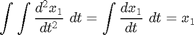
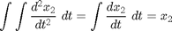
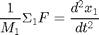
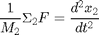
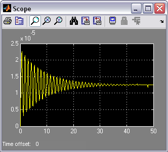

Suspension: Simulink Modeling
Contents
Physical setup
Designing an automotive suspension system is an interesting and challenging control problem. When the suspension system is designed, a 1/4 model (one of the four wheels) is used to simplify the problem to a 1D multiple spring-damper system. A diagram of this system is shown below.

The system parameters are as follows.
(m1) body mass 2500 kg
(m2) suspension mass 320 kg
(k1) spring constant of suspension system 80,000 N/m
(k2) spring constant of wheel and tire 500,000 N/m
(b1) damping constant of suspension system 350 N.s/m
(b2) damping constant of wheel and tire 15,020 N.s/m
(u) control force = force from the controller we are going to design
Design requirements
A good automotive suspension system should have satisfactory road holding ability, while still providing comfort when riding over bumps and holes in the road. When the vehicle is experiencing any road disturbance (i.e. pot holes, cracks, and uneven pavement),the vehicle body should not have large oscillations, and the oscillations should dissipate quickly. Since the distance X1-W is very difficult to measure, and the deformation of the tire (X2-W) is negligible, we will use the distance X1-X2 instead of X1-W as the output in our problem. Keep in mind that this is an estimation.
The road disturbance (W) in this problem will be simulated by a step input. This step could represent the vehicle coming out of a pothole. We want to design a feedback controller so that the output (X1-X2) has an overshoot less than 5% and a settling time shorter than 5 seconds. For example, when the vehicle runs onto a 10 cm high step, the vehicle body will oscillate within a range of +/- 5 mm and return to a smooth ride within 5 seconds.
Building the Model
This system will be modeled by summing the forces acting on both masses (body and suspension) and integrating the accelerations of each mass twice to give velocities and positions. Newton's law will be applied to each mass. Open Simulink and open a new model window. First, we will model the integrals of the accelerations of the masses.
(1)
(2)
- Insert an Integrator block (from the Continuous library) and draw lines to and from its input and output terminals.
- Label the input line "a1" (for acceleration) and the output line "v1" (for velocity) To add such a label, double click in the empty space just above the line.
- Insert another Integrator block and connect it to the output of the first.
- Draw a line from its output and label it "x1" (for position).
- Insert a second pair of Integrators below the first with lines labeled "a2", "v2", and "x2".

Next, we will start to model Newton's law. Newton's law for each of these masses can be expressed as:
(3)
(4)
These equations can be represented with gain blocks (for 1/M1 and 1/M2) and two summation blocks.
- Insert two Gain blocks, (from the Math Operations library) one attached to the inputs of each of the integrator pairs.
- Edit the gain block corresponding to M1 by double-clicking it and changing its value to "1/m1".
- Change the label of this Gain block to "Mass 1" by clicking on the word "Gain" underneath the block.
- Similarly, edit the other Gain's value to "1/m2" and it's label to "Mass 2". (You may want to resize the gain blocks to view the contents. To do this, single click on the block to highlight it, and drag one of the corners to the desired size.)
There are three forces acting on M1 (one spring, one damper, and the input, u) and five forces acting on M2 (two springs, two dampers, and the input, u).
- Insert two Sum blocks (from the Math Operations library), one attached by a line to each of the Gain blocks.
- Edit the signs of the Sum block corresponding to M1 to "+--" to represent the three forces (two of which will be negative).
- Edit the signs of the other Sum block to "++-++" to represent the five forces, one of which will be negative.

Now, we will add in the forces acting on each mass. First, we will add in the force from Spring 1. This force is equal to a constant, k1 times the difference X1-X2.
- Insert a Sum block after the upper pair of integrators.
- Edit its signs to "+-" and connect the "x1" signal to the positive input and the "x2" signal to the negative input.
- Draw a line leading from the output of the Sum block.
- Insert a Gain block above the "Mass 1" block.
- Flip it left-to-right by single-clicking on it and selecting Flip Block from the Format menu (or hit Ctrl-F).
- Edit the value of this gain to "k1" and label the block "Spring 1".
- Tap a line off the output of the last Sum block and connect it to the input of this Gain block.
- Connect the output of this Gain block (the spring force) to the second input of the Mass 1 Sum block. This input should be negative since the Spring 1 pulls down on Mass 1 when X1 > X2.
- Tap a line off the spring force line and connect it to the second input of the Mass 2 Sum block. This input is positive since Spring 1 pulls up on Mass 2.

Now, we will add in the force from Damper 1. This force is equal to b1 times V1-V2.
- Insert a Sum block below the Mass 1's first integrator.
- Flip it left-to-right, and edit its signs to "+-".
- Tap a line off the "v1" line and connect it to the positive input of this Sum block.
- Tap a line off the "v2" line and connect it to the negative input of this Sum block.
- Insert a Gain block to the left of this Sum block and flip it left-to-right.
- Edit its value to "b1" and label it "Damper 1".
- Connect the output of the new Sum block to the input of this gain block.
- Connect the output of this gain block (the damper force) to the third input of the Mass 1 Sum block. This input is negative, similar to Spring 1's force on Mass 1.
- Tap a line off Damper 1's force line and connect it to the first input (which is positive) of Mass 2's Sum block.

Now we will add in the force from Spring 2. This force acts only on Mass 2, but depends on the ground profile, W. Spring 2's force is equal to X2-W.
- Insert a Step block in the lower left area of your model window. Label it "W".
- Edit it's Step Time to "0" and it's Final Value to "0". (We will assume a flat road surface for now).
- Insert a Sum block to the right of the W Step block and edit its signs to "-+".
- Connect the output of the Step block to the positive input of this Sum block.
- Tap a line off the "x2" signal and connect it to the negative input of the new Sum block.
- Insert a Gain block to the right of this Sum block and connect the Sum's output to the new Gain's input.
- Change the value of the gain to "k2" and label it "Spring 2".
- Connect the output of this block (Spring 2's force) to the fourth input of Mass 2's Sum block. This force adds in in the positive sense.

Next, we will add in the force from Damper 2. This force is equal to b2 times V2-d/dt(W). Since there is no existing signal representing the derivative of W we will need to generate this signal.
- Insert a Derivative block (from the Continuous library) to the right of the W step block.
- Tap a line of the Step's output and connect it to the input of the Derivative block.
- Insert a Sum block after the Derivative block and edit it's signs to "+-".
- Connect the Derivative's output to the positive input of the new Sum block.
- Tap a line off the "v2" line and connect it to the negative input of this Sum block.
- Connect the output of this Sum block (Damper 2's force) to the fifth input of Mass 2's Sum block. This force also adds in with positive sign.

The last force is the input U acting between the two masses.
- Insert a Step block (from the Sources library) in the upper left of the model window.
- Connect its output to the remaining input of Mass 1's Sum block (with positive sign).
- Tap a line off this signal and connect it to the remaining input of Mass 2's Sum block (with negative sign).
- Edit this Step block's Step Time to "0" and leave its Final Value "1".
- Label this Step block "U".
- Finally, to view the output (X1-X2) insert a Scope block (from the Sinks library) and connect it to the output of the rightmost Sum block.

You can download a model file for the complete system here, suspmod.mdl.
Open-loop response
To simulate this system, first, an appropriate simulation time must be set. Select Parameters from the Simulation menu and enter "50" in the Stop Time field. 50 seconds is long enough to view the open-loop response. The physical parameters must now be set. Run the following commands at the MATLAB prompt:
m1 = 2500; m2 = 320; k1 = 80000; k2 = 500000; b1 = 350; b2 = 15020;
Run the simulation (Ctrl-T or Start on the Simulation menu). When the simulation is finished, double-click on the scope and hit its autoscale button. You should see the following output.

Observing the above, we would like to improve the response of the suspension through the control of the suspension control force U. The model created here will be employed for controller design and analysis within Simulink in the Suspension: Simulink Controller Design page.